Illustration Portfolio
Current & In-Progress Web Projects
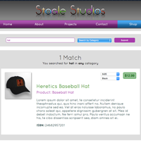View the Stogle Studios Website
Stogle Studios seeks to assist independent visual artists and authors to reach their audiences and provide a storefront. The biggest challenge designing the logo and website was that image-text content can include anything from children's picture books to (often dark) graphic novels and the design needs to be appropriate for either. Consequently, I chose bright primary and secondary colors and simple geometric shapes in a clean and crisp space. I took the photography with the intent of creating a textural backdrop to each page that evoked the creative process of the both writing and illustrating .
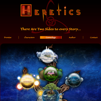View the Heretics Website
The Heretics website is designed to introduce the Heretics Graphic Novel to potential publishers. The challenge with this site was to convey the Noir atmosphere of the graphic novel while presenting a positive and engaging experience. So although I used the deep blacks and dark reds from the cover artwork, I filled much of the space with a parchment color and accented with orange and yellow to keep the overall page as bright and colorful as possible. This gives reading the site a feel similar to reading ancient documents in medieval candlelight while resonating with the novel's main theme that goodness is often enshroud in darkness such that good and evil are not as easy to tease apart as we would like to believe.
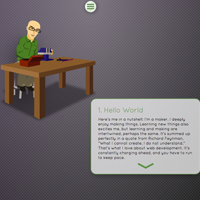View Brandon Gaius Ogle's Website
This is a self promotion piece designed to communicate my personality and attitudes to potential employers. The main challenge here was the file size associated with the animations, the same issue I dealt with often years ago with Flash development. To start with I planed on making animations that seemed longer than they really were. Each animation is composed of 12 frames. 4 frames to position for the animation, 4 frame to repeat in one of a few different patterns, and 4 frames to return to the neutral position. I created the characters and props in Illustrator and imported the many components into After Effects. I built a character rig and animated. Once completed I exported it as a PNG sequence and used Photoshop to build sprites. I used linked smart objects in Photoshop so anytime I needed to tweak the animation it was quick to rebuild the sprites. I then used a combination of compression technologies to shrink the sprites' file size as much as possible. I used jQuery for to animate the sprite and the navigation. The navigation I choose would not normally be one I'd approve of because it overrides the user's expected browser behavior, but in this case I wanted each section to feel like a self contained world to help give the viewer a feeling of a time and place. The site only had seven simple sections so I did not feel this would be too distracting to the user.
A Case Study in Problem Solving
When I discovered that AngelVision was using a plain text and confusing unsubscribe page, I new that this was a serious problem. I informed the Email Marketing team of this issue and educated them as to why a better page could not only reduce the number of unsubscribes, but could even re-engage customers. I formulated a plan to take action and resolve the issue within a week.
MoreThe objective was to create an Unsubscribe Page that would encourage users to stick around and even reengage with us if possible. The previous Unsubscribe Page was basic HTML, with longwinded and confusing text, and nonintuitive buttons. Anyone looking to leave the mailing list, would only be further encouraged to do so when they saw such an unprofessional looking page.
What I wanted to do was create a page that was funny yet pulled at the heartstrings. You want viewers to feel that we are truly saddened to see them leave but you need to be careful not to make them feel like you are dumping a guilt trip on them. That would only make them feel resentful, hence the need for a lighthearted feel. Ideally you want to get a chuckle with just a touch of guilt to encourage them to stay -- which is a delicate balance to reach.
I tasked our design team to come up with ideas, a few each, on a Friday when everyone feels a bit playful anyway and to send them to me. Meanwhile, I assigned a programer with the task of building the page functionality. In addition to removing people from the Database, I wanted the page to have more buttons and to track more data about what happens when viewers reach the page.
I went trough the design ideas. Although none were home runs, I choose one I knew I could flesh out. I give the character more personality and fleshed out his background. Finally, I then wrote the text and handed it over to the programmer to implement. With in a week of seeing the need for a new Unsubscribe page, we had this new page live and saw an immediate 12% drop in unsubscribes.
Less 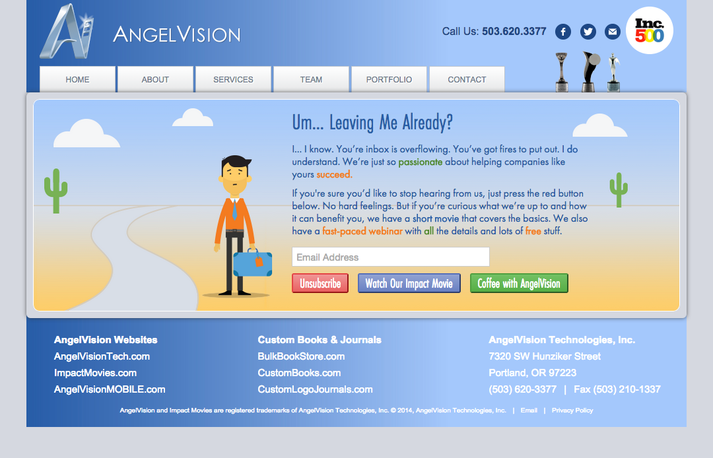Landing Pages
At AngelVision, we made 3 minute informative videos. Originally, we did this in Flash so the animation and interactive call to action were part of the same SWF object. Later we trasitioned to After Effects for animating and HTML5 landing pages for the call to action. I made as many as eight of these a day. It was good practice making swift yet appropriate design choices and creating flexaible CSS templates to program those designs very quickly.
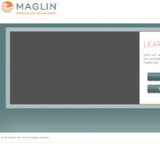Maglin
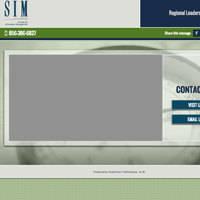SIM
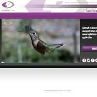Vision Research
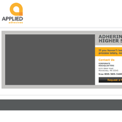Applied Adhesives
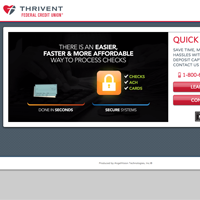Thrivent

Beck's Hy-Test
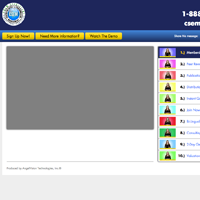CSEM
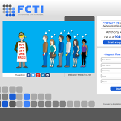FCTI
IRC
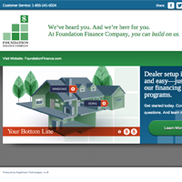FFC
Immersive Websites
When I first entered web development, Flash was really the only way to create rich interactive web content that maintained design and performance consistancy across browsers. Since Flash has currently has limited support, I've included two screen captures highlighting interactive web experiences I designed and programmed using Flash and ActionScript.
The object was to find a fun way to explore the staff at AngelVision so clients would be able to learn about who they were going to be working with and express the fun of working with AngelVision to prospective clients. The web team decide we wanted something along the lines of a carousel and I knew that the numbers of employees would fluctuate so I wanted something that would be easy to maintain and not break the design when the number of employees changed.
Photonic Playground produced primarily printed materials and packaging. The goal was to create a fun, interactive portfolio that could resemble the feeling of interacting with three dimensional packages and multipage brochures, particularly those with unique binding that would not easily come across in photograph.